Java混乱的日志体系
Java中有哪几个日志框架？
log4j
log4j2
jcl java common log Spring底层用的jcl
slf4j
logback
Jul jdk自带 Java.util.logging 不需要添加第三方依赖 输出的日志是红色的
simpleLog
多个日志框架共存导致项目混乱，难以维护。无法统一控制级别，日志输出格式，颜色，引入的不同包等
这时需要考虑一种合适的日志技术，在一个项目中可以保证后续的开发，和其他日志框架的兼容 ，因为比如说Spring，mybatis，它们自己也用不同的日志框架。你可以保证自己项目不同jul,jcl，但是你不能保证其他框架不用这些东西
他们之间的关系
Log4j和JUL
Test.java
1 | package org.rico; |
1 | public class JULTest { |
1 | public class Log4JTest { |
1 | log4j.rootLogger=info,stdout |
1 | <dependency> |
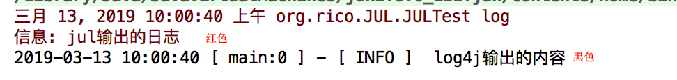
log4j控制日志级别，打印格式是比较方便的， 可以通过配置文件进行配置
但是JUL要控制上述东西是比较困难的，所以log4j是对JUL的一种改进，
Log4j和JCL
common-logging 就是JCL
mybatis中有这个日志框架
于是我们再写一个测试类
1 | public class JCLTest { |
发现它的输出和log4j一模一样，而且改变了log4j的配置文件，jcl也受影响
其实，JCL底层调用的是Log4j ,包括他的配置文件，格式都是用的log4j
那么为什么JCL要这么干呢？ 他不是多余的吗？为什么要这么矛盾呢？
要解答这个问题，我们来看源码:
discoverLogImplementation方法是关键方法
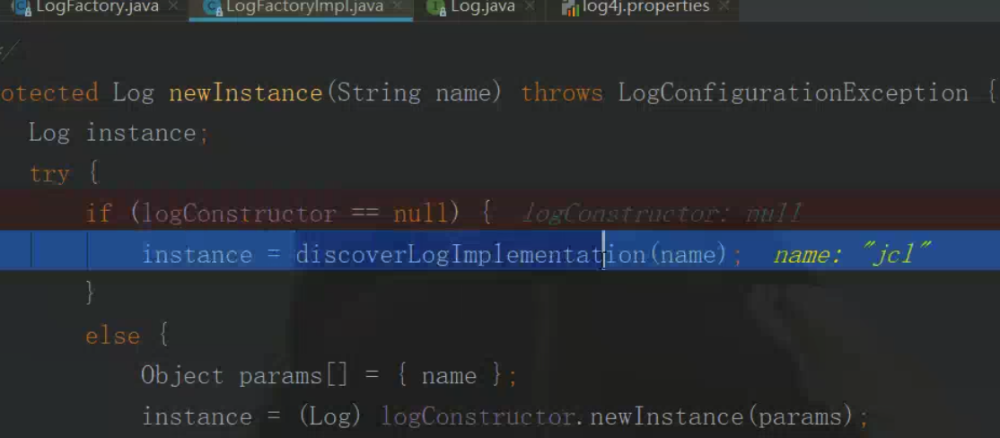
其中有一个for循环，它会寻找它所规定的那几个日志实现类

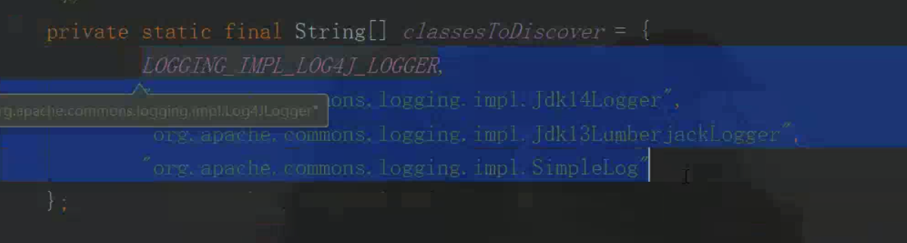
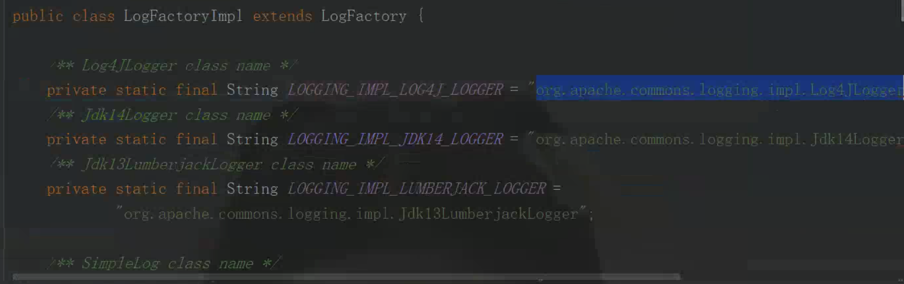
也即
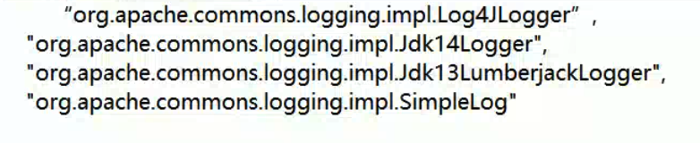
这些日志实现类
然后利用反射技术查找这些类，然后进行实例化,如果找不到就会抛异常。如果我们的项目依赖了log4j的jar包，那么就可以找到，就可以实例化 ，就得到了一个日志类，就跳出循环 ，如果你啥第三方日志框架实现类都没依赖，那么就会找不到，就会报错
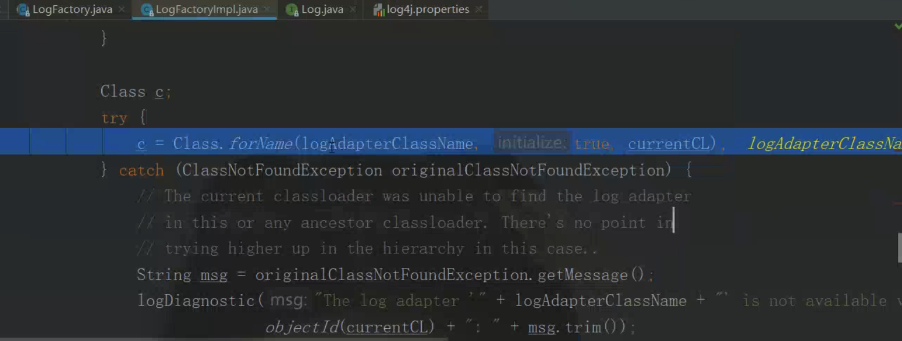
JCL本身不实现日志，它是帮你找到你所依赖的第三方的日志实现类
JDK14Logger是jdk1.4版本中的记录日志的工具 ，就是JUL
JDK13LumberjackLogger是jdk1.3中记录日志的工具
SimpleLog是SimpleLog
所以，JCL会帮你寻找4种记录日志的实现类
如果你没依赖log4j,JCL就会帮你找到 JUL(jdk1.4自带)的来进行日志记录
这样就很灵活，你依赖了啥日志框架，就用啥，想用，想不用都很方便 。而且最关键的是，你的代码根本不需要懂，只要改pom依赖即可。
但是JCL也有局限性，就是它这个数组只包含了这四种日志框架的实现类，如果有其他的日志框架不断涌现，没被纳入进来，就没用了 ，并且JCL有实例化的顺序之分，
JCL不再更新，后来被slf4j干掉了 ，因为slf4j兼容所有的日志框架，甚至还兼容JCL
SLF4j
它有一个绑定器的概念 来适配不同的日志框架
绑定器
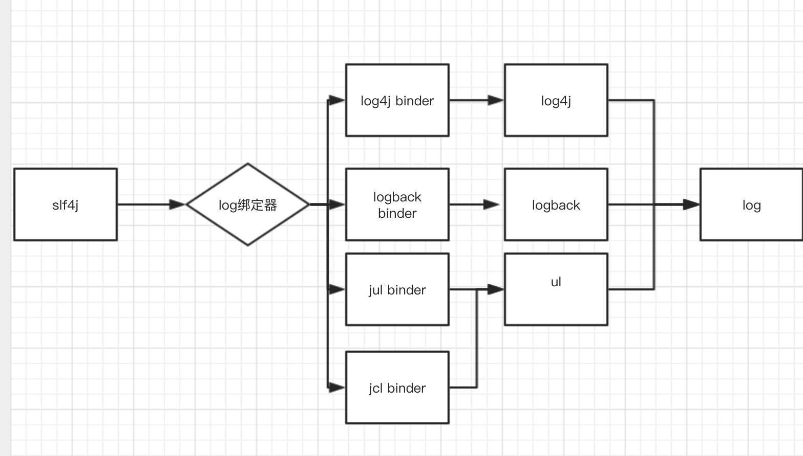
比如说我们用slf4j来对log4j进行使用，那么我们需要三个依赖的jar包
一个slf4j,一个slf4j队log4j的绑定器依赖，一个log4j本身
slf4j并不是接口，它其实有点像装饰者模式
下图是slf4j官网的图
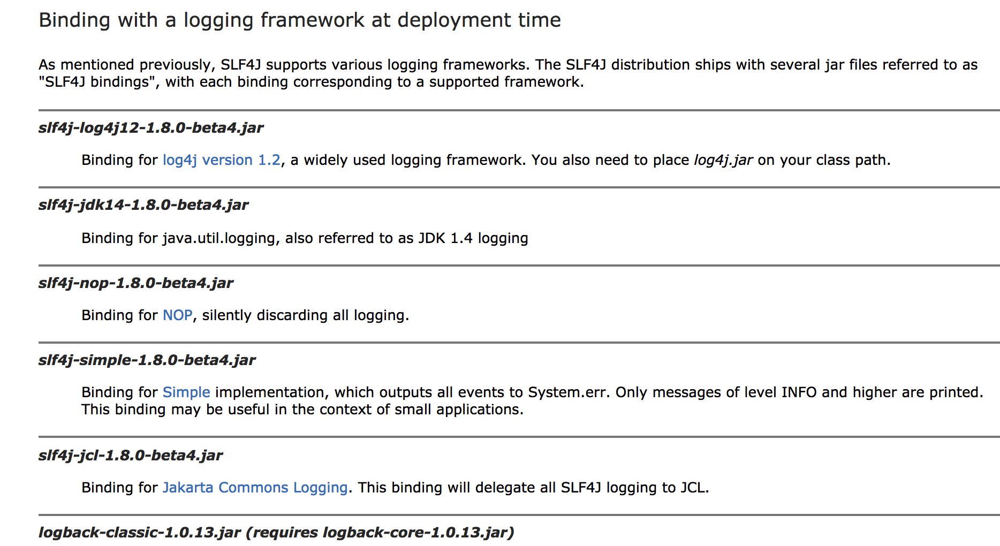

Pom.xml
1 | <!-- slf4j 的核心依赖 --> |
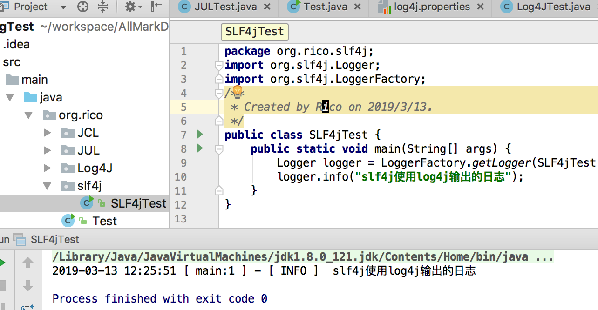
这样的写法没有具体指定引用了那个日志框架类，要改具体的日志框架也只需要修改pom依赖(slf4j与某个框架的绑定)即可
如果在slf4j中同时依赖了多个绑定器
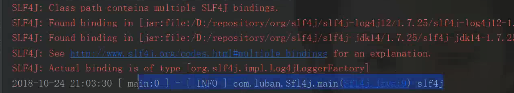
会发出警告，但是日志还是会打印
桥接器
1 | <dependency> |
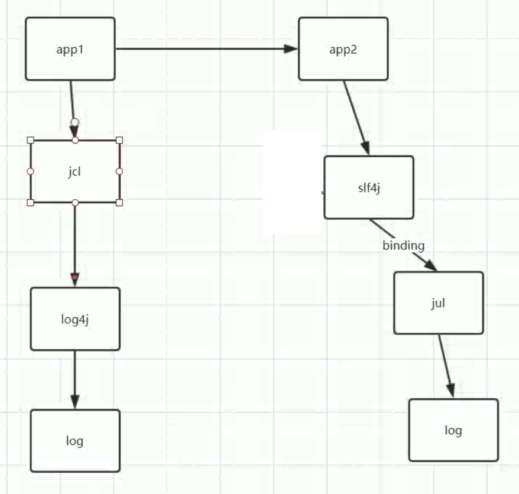
假设我们之前有个项目app1使用的是jcl，jcl用的log4j来打印日志
后来二期项目(不是另起的项目，在一块儿)采用slf4j,它使用jul打印日志。
如果此时，我想要原来第一个项目中的代码也是用jul打印日志，就可以使用slf4j桥接器了 jcl-over-slf4j
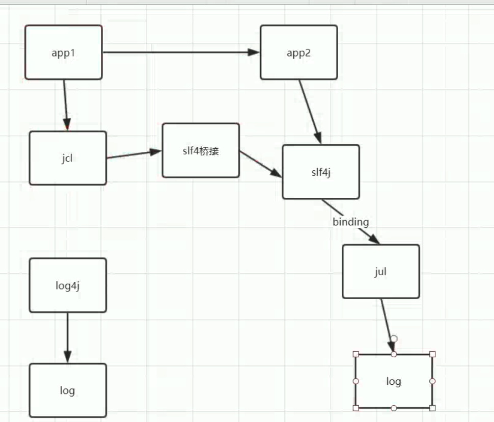
还有一种情况，原项目没用jcl，直接使用log4j来使用日志 ,然后二期项目采用的是slf4j->jul的技术
但是我想让一期项目的代码也是用slf4j->jul的技术
就像下图
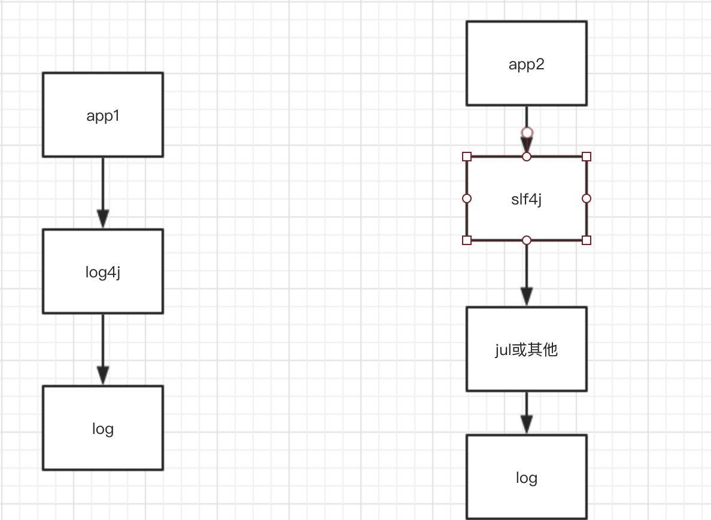
怎么办呢？
此时，只需要加一个log4j-over-slf4j的桥接器即可
1 | <dependency> |
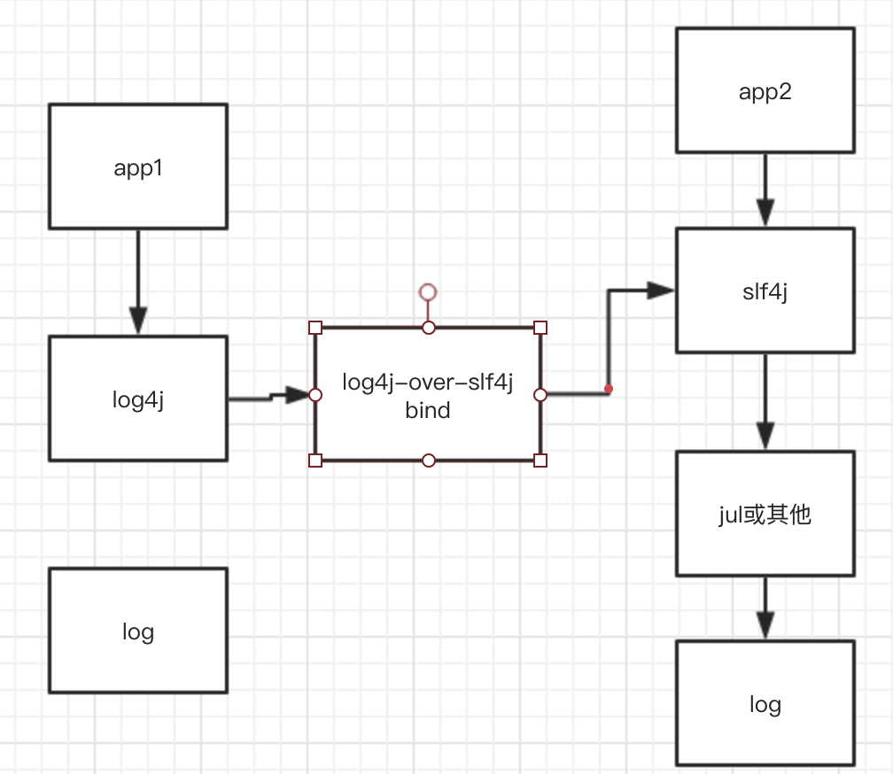
slf4j无限循环
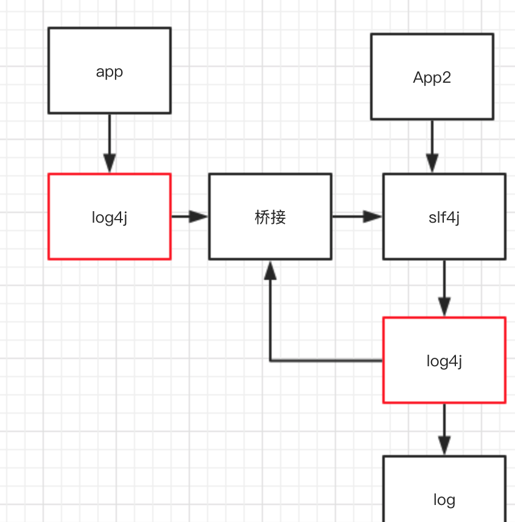
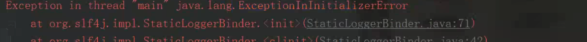
死循环，stackoverflow溢出